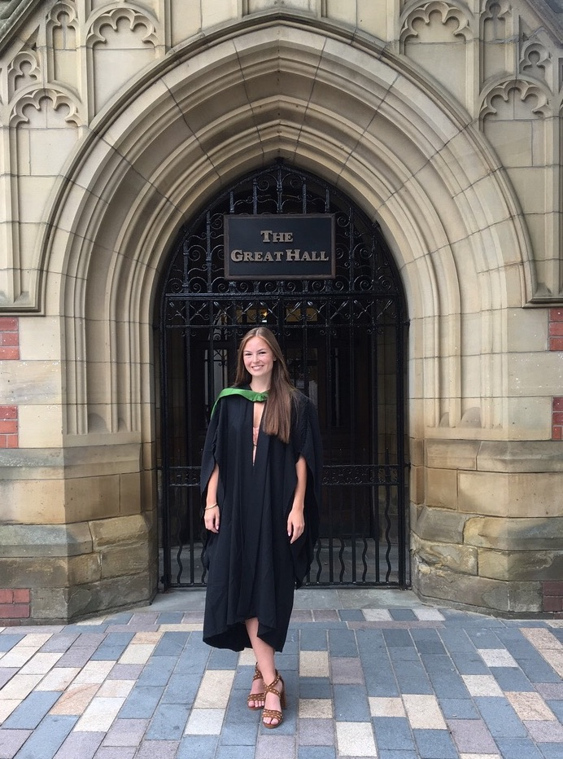

I graduated from the University of Leeds in 2018 with a BSc(Hons) in Environmental Science. I am currently a MRes Climate and Atmospheric Science student at the University of Leeds. I have created this website for my GEOG5990M module. Here I will create links to my coding practicals and any module related projects.
